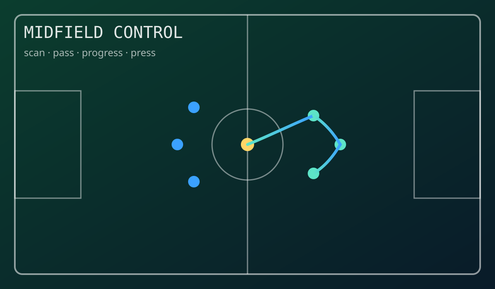

Club Identity
Real Madrid supporter, inspired by elite standards and composure under pressure.
SE Student @ BUAA | Data & Algo Intern
I'm Jack Yu, a Software Engineering student at BUAA and a data & algorithm intern. I build clean, reliable systems and bring the same midfield mindset to engineering: read the game early, move the ball fast, and make teammates better.
 Hala Madrid
Hala Madrid

Preferred role: central midfielder. I focus on progressive passing, tempo control, and covering transition lanes.
Working on perception pipelines, high-quality datasets, and efficient model training. I'm especially interested in bridging research ideas into production-grade autonomy systems.
Real Madrid supporter, inspired by elite standards and composure under pressure.

Central midfield role with quick scanning, line-breaking passes, and compact positioning.

Build systems like match control: clear structure, fast transitions, and resilient execution.